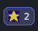
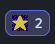
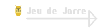
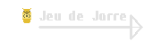

Programme codee en Python avec l'API discord.py sur Pycharm
Petit Match de Ping-Pong
Le bot discord est en capacite de lire tout les message
dans le server
a la suite, il est possible de le faire reagir
a certaine phrase
en exemple ici, a chaque message contenant
le mot "ping" il repondra "pong"
il peut facilement etre un
bot de moderation
A Votre Service !
Il est possible de demande a un bot discord d'effectuer des
action.
Pour cela il faut ecrire le prefixe du bot (ici "Kyla.")
et l'action demande Il est donc possible de faire de nombreuse
chose, comme demande les regle d'un serveur ou des instruction
plus precise sur le theme du server. On peut aussi reserve les
commandes a certaine personne en fonction de leur roles, il est
donc possible de faire un systeme d'avertissement, pas disponible
sans bot, en utilisant une commandes qui donnera un avertissement
quand on donne sont identifiant, alors l'identifiant serra stocke
avec sont nombre d'avertissement dans un dictionnaires et renvoyer
au bout du 3eme.


Recevez ma Bénédiction
Il est aussi possible de faire en sorte que un bot discord
attribue des role au utilisateur comme tout moderateur, pour
optimise cela, il est possible que un bot lise tout les reactions
mise sur un message en particulier et d'ajoute un role en
fonction de la reaction ajoute et si enleve alors d'enleve le role
a la suite de quoi, on peut aussi avertir l'utilisateur en lui
envoyant un message prive avec le bot.

 

Conclusion
C'est un programme que j'ai crée a la fin des grandes vacances de 2021, c'est un programme que j'ai eus envie de faire pour un server personnalisé. pour la réalisation de ce programme, j'ai du apprendre a utilisé une API (discord.py) et suivre la documentation en ligne pas part pas, cela fut très enrichissant et utile.


 
